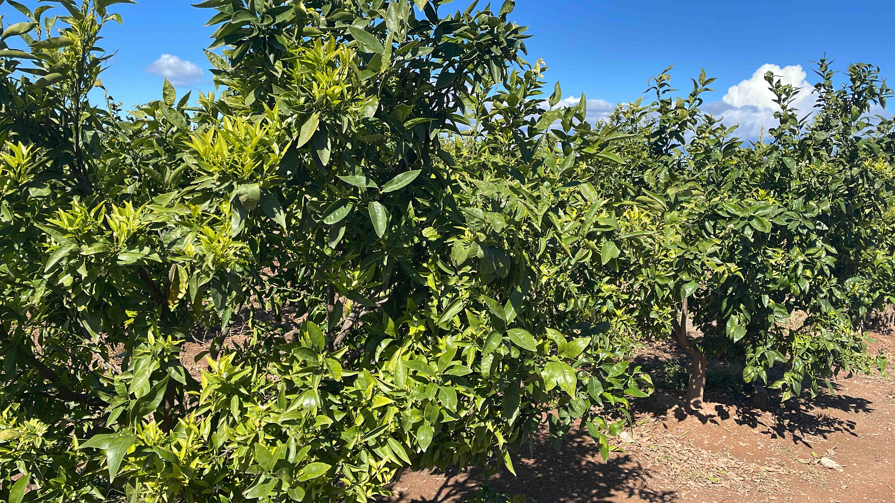
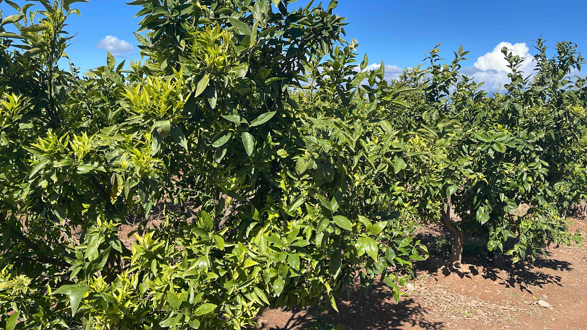
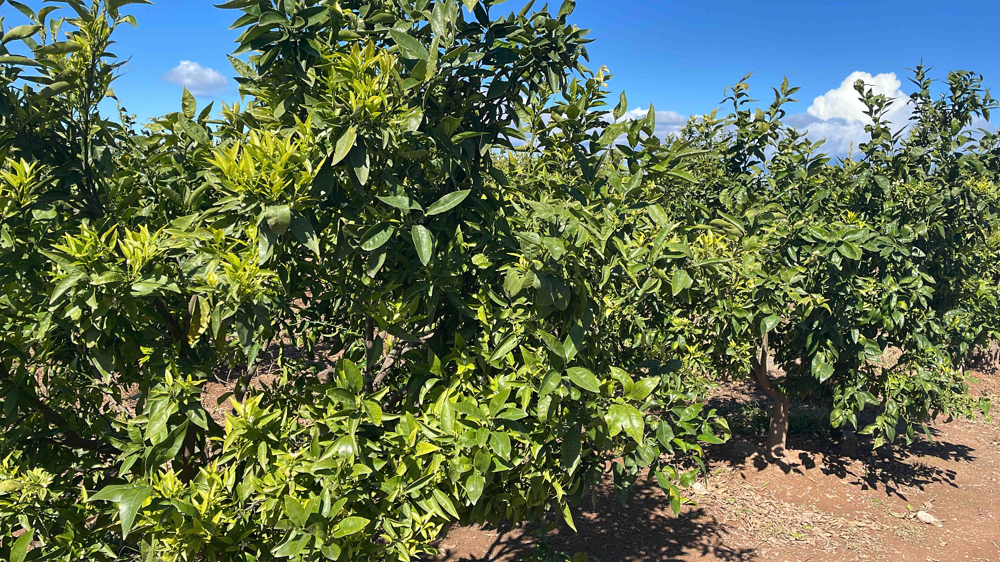

GIF - 5,45MB
PNG - 16,5MB
JPG 100% - 9,44MB
JPG 50% - 1,48MB
JPG 25% - 1,01MB


 

GIF - 5,45MB
PNG - 16,5MB
JPG 100% - 9,44MB
JPG 50% - 1,48MB
JPG 25% - 1,01MB

WAV - 2,52MB
MP3 - 446KB
OGG - 297KB